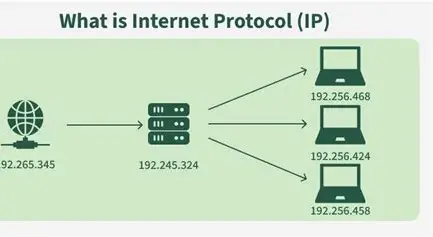

Internet Protocol

The Internet Protocol (IP) is the network layer protocol in the TCP/IP suite responsible for logical addressing, routing, and packet delivery across interconnected networks. It defines how data is packaged into datagrams, addressed with source/destination IPs, and routed hop-by-hop through the global internet.
What IP Actually Does
- Addressing→ Assigns unique 32-bit (IPv4) / 128-bit (IPv6) identifiers to every device
- Packetization→ Encapsulates application data into IP datagrams
- Routing→Forwards packets between networks using IP addresses
- Fragmentation→Breaks large packets to fit network MTU limits
- Delivery→Best-effort (unreliable) datagram service
How IP Works - Complete Packet Flow
[App Data] →TCP/UDP Segment →IP Datagram →Ethernet Frame → Wire
Features
- Connectionless - No handshakes/sessions
- Best Effort - No delivery guarantees (TCP provides reliability)
- Unordered - Packets may arrive out of sequence
- Global Addressing - Works across any network type
Limitations
- Unreliable - Drops packets silently
- IPv4 Exhaustion - 4.3B addresses insufficient
- No Security - IPsec required for encryption
- No Flow Control - Handled by transport layer